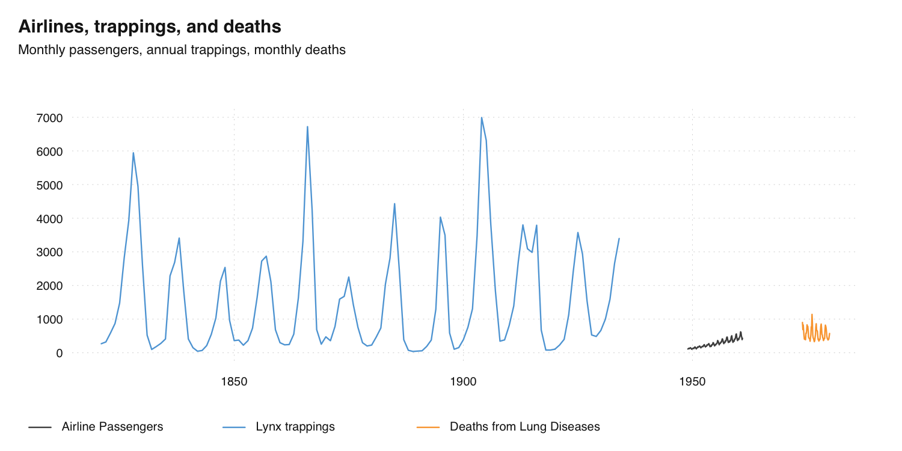

vignettes/tsbox.Rmd
tsbox.RmdThe R ecosystem knows a vast number of time series standards. Instead of creating the ultimate 15th time series class, tsbox provides a set of tools that are agnostic towards the existing standards. The tools also allow you to handle time series as plain data frames, thus making it easy to deal with time series in a dplyr or data.table workflow.
tsbox is built around a set of converters, which convert time series stored as ts, xts, data.frame, data.table, tibble, zoo, tsibble, tibbletime or timeSeries to each other. Because this works reliably, we can easily write functions that work for all classes. So whether we want to smooth, scale, differentiate, chain, forecast, regularize or seasonally adjust a time series, we can use the same commands to whatever time series class at hand. And, most conveniently, we get a time series plot function that works for all classes and frequencies.
To install the stable version from CRAN:
install.packages("tsbox")To install the development version:
# install.packages("remotes")
remotes::install_github("christophsax/tsbox")tsbox can convert time series stored as ts, xts, data.frame, data.table, tibble, zoo, tsibble, tibbletime or timeSeries to each other:
library(tsbox)
x.ts <- ts_c(fdeaths, mdeaths)
x.xts <- ts_xts(x.ts)
x.df <- ts_df(x.xts)
x.dt <- ts_dt(x.df)
x.tbl <- ts_tbl(x.dt)
x.zoo <- ts_zoo(x.tbl)
x.tsibble <- ts_tsibble(x.zoo)
x.tibbletime <- ts_tibbletime(x.tsibble)
x.timeSeries <- ts_timeSeries(x.tibbletime)
all.equal(ts_ts(x.timeSeries), x.ts) # TRUEtsbox provides a basic toolkit for handling time series. These functions start with ts_, so you use them with auto complete (press Tab). These functions work with any ts-boxable time series, ts, xts, data.frame, data.table tibble, zoo, tsibble or timeSeries and return the class of their inputs.
For example, the ts_scale function performs normalization - it subtracts the mean and divides by the standard deviation of series. Like almost all ts- functions, it can be used with on any ts-boxable object, with single or multiple time series. Because ts_scale normalizes time series, it is useful to make different time series comparable. All of the following operations perform the same task, but return the same object class as the input:
There is a bunch of other transformation functions: ts_trend, which estimates a trend; functions to calculate differences, ts_pc, ts_pcy, ts_diff, ts_diffy; a function to shift series, ts_lag; functions to construct indices, both from levels and percentage change rates: ts_index and ts_compound. For a full list of functions, check out the reference.
A set of helper functions makes it easy to combine multiple time series, even if their classes are different. The basic workhorse is ts_c, which simply collect time series. Again, this works with single or multiple series of any ts-boxable class:
If you want to choose a different name for single series, name the arguments:
Multiple series can be also combined to a single series:
ts_chain offers an alternative way to combine time series, by chain-linking them. The following prolongs a short time series with percentage change rates of a longer one:
To pick a subset of time series, and optionally rename, use ts_pick:
There are functions to convert the frequency of time series and to regularize irregular time series. The following changes the frequency of two series to annual:
ts_frequency(ts_c(AirPassengers, austres), "year", sum)We already met ts_span, which can be used to limit the time span of a series. ts_regular makes irregular time series regular, by turning implicit missing values into explicit NAs.
Of course, this works for plotting, too. The basic function is ts_plot, which can be used with any ts-boxable time series, single or multiple, of any frequency:
If you want to use different names than the object names, just name the arguments (and optionally set a title):
ts_plot(
`Airline Passengers` = AirPassengers,
`Lynx trappings` = ts_df(lynx),
`Deaths from Lung Diseases` = ts_xts(fdeaths),
title = "Airlines, trappings, and deaths",
subtitle = "Monthly passengers, annual trappings, monthly deaths"
)
There is also a version that uses ggplot2 that uses the same syntax. With theme_tsbox() and scale_color_tsbox(), the output of ts_ggplot is very similar to ts_plot.
Finally, ts_summary returns a data frame with frequently used time series properties:
ts_summary(ts_c(mdeaths, austres, AirPassengers))Thanks to packages such as data.table and dplyr, data frames have become the dominant data structure in R, and storing time series in a data frame is a natural consequence from this. And even if you don’t intend to keep your time series in data frames, this is the format in which you import and export the data.
In data frames, i.e., in a data.frame, a data.table, or a tibble, tsbox stores one or multiple time series in the ‘long’ format. tsbox detects a value, a time and zero, one or several id columns. Column detection is done in the following order:
Starting on the right, the first first numeric or integer column is used as value column.
Using the remaining columns, and starting on the right again, the first Date, POSIXct, numeric or character column is used as time column. character strings are parsed by anytime::anytime(). The time stamp, time, indicates the beginning of a period.
All remaining columns are id columns. Each unique combination of id columns points to a time series.
Alternatively, the time column and the value column to be explicitly named as time and value. If explicit names are used, the column order will be ignored. If column are detected automatically, a message is returned.
tsbox works well with tibbles and with %>%, so it can be nicely integrated into a dplyr workflow: